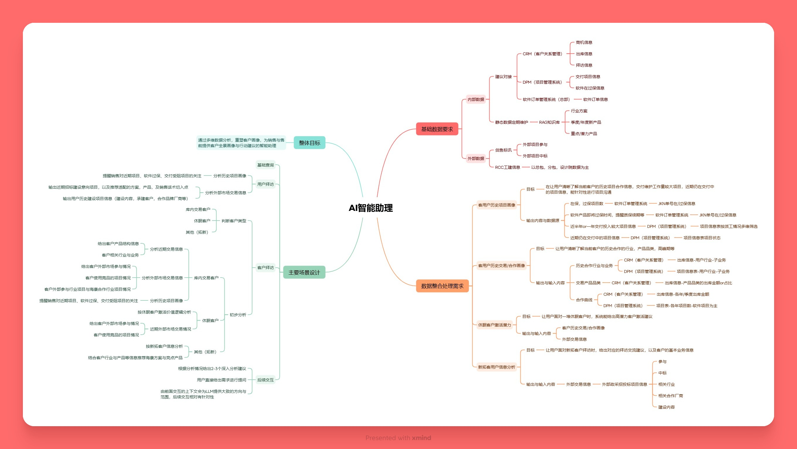

由部门内部Agent经验出发，负责业务中心销售客户AI智能助理的场景调研、需求分析、数据分析、逻辑设计、功能设计。
旨在整合内外部数据，为销售提供客户全景画像与行动建议的智能助理。

1、设计对接外部信息（标讯信息，RCC工建信息），内部数据（CRM，DPM，软件订单管理系统），内部静态数据（方案/产品RAG库）。
2、调研数据关注点，并设计数据分析需求：客户历史项目画像、客户历史交易/合作画像、休眠客户激活潜力、新拓客用户信息分析。
3、对主要交互场景：客户、用户拜访准备，进行基础信息的输出设计，优化prompt以提升输出质量，并支持多层级分析，用户多轮交互数据下钻分析。
潜客筛选：提升单个销售组高潜客户筛选效率50%，外部项目检索筛选效率提升30%。
拜访准备：快速汇聚内外部信息，结合拜访对象情况，整理销售话术与推荐方案，提升业务检索与准备效率50%，触达有效率提升30%。